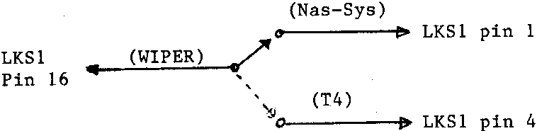

INMC 80 News |
February–April 1981 · Issue 3 |
| Page 6 of 55 |
|---|
If anyone wants to run T4 on an N2 then place T4 1 and 2 in the first two sockets of block A i.e. sockets and wire the associated linkblocks for 2708 eproms. Remove the link between LKS1 pins 1 and 16. Connect LKS1 pin 4 (Block A select) to pin 7 (XROM). Connect a 1 pole 2 way switch as follows:
This I have used to load my old programs under T4, then either use them (Startrek Strikes Again!!), or readjust them. Put the processor in a halt and switch over to Nas-sys.
Has anyone noticed the NMI lead on pin 4 of the Keyboard port. It would seem possible to connect a switch between this pin and 0v to generate an NMI instead of reset (as long as workspace has not been corrupted). This may give any info. such as being locked in an “eternal loop”.
David Roberts, Kendal, Cumbria.
It may interest fellow members of INMC80 to hear of a problem I have been having with my Nascom 1 and the cure that I have effected. The problem at first sight was a form of memory plaque, DD…, FD…, and ED… instructions were corrupted and Basic crashed frequently. Naturally I tried all the cures and even tied the data and address bus lines to +5 volts through 10K resistors but nothing really worked well.
I then added the Interface Components excellent EPROM board and measured the +5 volts rail, + 4.65 volts. Well, 32K and quite a few EPROMs made me start wondering how I could afford an 8A power supply. Then I put the meter across the earth terminals, earth on the power supply and on the N1 board, and low and behold there was a drop of 320 mV. I added thick wires to the power supply earth, running to Nascom 1 earth (100 mV drop), commoned the four rails on the motherboard, (screen from coax cable tacked in place) (20mV),and ran a further earth lead (thick) from motherboard to 43 way connector (5 mv).
Operationally the N1 is now immune to interference, washing machines, fridges, vacuum cleaners and the like, even a Weller soldering gun firing on the same ring circuit dosen’t affect it.
I hope you can see fit to publish this letter as I feel there must be others suffering from the same problem and also considering the same solution I was, selling up and buying transatlantic plastic.
Doug Taylor, London
Having recently joined INMC80, and receiving INMC80-2 as my first newsletter, I was delighted to see how well my money has been spent.
| Page 6 of 55 |
|---|